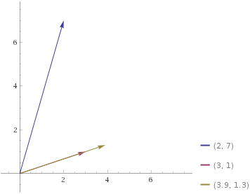
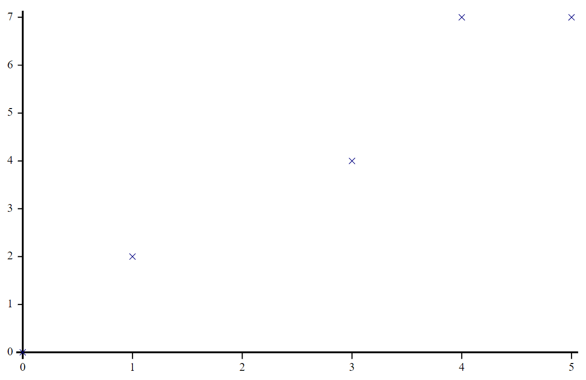

Domino in depth ⌹
Domino in depth ⌹#
Matrix inversion, ⌹, is often called domino due to its symbol which isn’t really a domino (🁫) at all, but rather a division sign in a quad, the latter representing division/inversion (÷). You’re of course familiar with the ÷ primitive. Perhaps you also know that matrix multiplication is +.× but that we don’t have a corresponding operator for matrix division. You can actually use +.×⍣¯1 for matrix division, but since ⍣ wasn’t always around (and certainly not ⍣¯1) and for notational ease, ⌹ provides this functionality too. Matrix inversion, what is that? Well, for a square matrix \(A\), its inverse \(A^{-1}\) is a matrix such that when the two are multiplied together, the result is the identity matrix:
Let’s keep two easy-to-remember matrices at hand:
⎕←E←2 2⍴2 7 1 8
⎕←P←2 2⍴3 1 4 1
2 7 1 8
3 1 4 1
If we invert P we get:
⌹P
¯1 1 4 ¯3
And indeed:
P+.×⌹P
1 0 0 1
In mathematics, matrix division as a notation isn’t usually used. Instead, mathematicians use multiplication by an inverse. However, the analogy with × and ÷ is pretty obvious, so APL defines A⌹B as (⌹B)+.×A just like a÷b is (÷b)×a (remember though that matrix multiplication isn’t commutative!):
E⌹P
(⌹P)+.×E
¯1 1 5 4
¯1 1 5 4
So far, there’s nothing much controversial here. However, ⌹ isn’t just for matrices. You can use it on vectors too, or even on a matrix and a vector.
2 7⌹3 1
1.3
What does this mean? Well, following the above reasoning, we can perhaps see that the following should be equivalent:
(⌹3 1)+.×2 7
1.3
and that ⌹ v represents the vector divided by the square of its norm:
⌹3 1
0.3 0.1
Another way to think of it is that 2 7⌹3 1 is the “length” of the component of 2 7 in the 3 1-direction.

In other words, if we project 2 7 perpendicularly to the extension of 3 1 we hit a point on 3 1’s extension which is 1.3×3 1 from 0 0.
This kind of leads us towards some of the tricks ⌹ can do. We can even use ⌹ on scalars, where it behaves just as ÷ except it errors on 0÷0 (where ÷ doesn’t error). This is convenient if you want to make sure to catch division-by-zero errors.
A common usage for ⌹ is to solve equation systems. Consider
\begin{array}{rcrcr} 2x &+& 7y &=& 12 \ x &+& 8y &=& 15 \end{array}
We can represent this as a matrix (our E) on the left of the equal signs and as a vector (12 15) on the right.
12 15⌹E
¯1 2
This says x←¯1 and y←2. Let’s check the result:
2 7+.ׯ1 2
1 8+.ׯ1 2
12
15
OK, remember how we found x y≡¯1 2 with 12 15⌹E? It follows that if we add x and y we should get 1:
12 15 1⌹E⍪1 1
¯1 2
which simply means that
\begin{array}{rcrcr} 2x &+& 7y &=& 12 \ x &+& 8y &=& 15 \ x &+& y &=& 1\end{array}
But what if we tell APL that the last sum doesn’t equal 1?
(x y)←⎕←12 15 1.1⌹E⍪1 1
¯0.9412903226 1.989032258
What nonsense is this? It doesn’t even fulfil any of the equations:
2 7+.×x y
1 8+.×x y
1 1+.×x y
12.04064516
14.97096774
1.047741935
But as you can see, it is pretty close. This is an over-determined system, so APL found the solution that fits best. It defines “best” by a very common method called the least squares fit, which can also be used to make other kinds of fits. What it means is that it tries to minimise the squares of the “errors”. In a sense, it smoothes the errors out, which means we can use it for smooth curve-fitting too.
Unfortunately, we won’t have the scope to go through many possibilities here, but you can see a few uses if you search APLcart for ⌹ fit. Let’s just take the very first one from there: ⊢⌹1,∘⍪⊣. Let’s say we have
x ← 0 1 3 4 5
y ← 0 2 4 7 7

x(⊢⌹1,∘⍪⊣)y
0.2209302326 1.453488372
This means the best linear fit is $\(y(x)=0.22093x+1.45349\)$